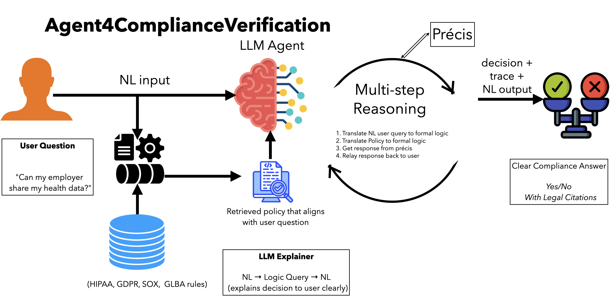

I am a third-year PhD candidate in Computer Science at Stony Brook University, advised by Dr. Omar Chowdhury. My research bridges formal methods and large language models to build trustworthy AI systems for security-critical applications.
I work on two interconnected problems:
Evaluation: How reliable are LLMs for generating formal specifications? My systematic evaluation framework assesses LLM-generated temporal logic across syntactic correctness, semantic equivalence, and trace-based behavior.
Systems: Can we combine LLM flexibility with formal verification guarantees? I am developing agentic systems for automated regulatory compliance verification that translate natural language queries into formal logic (LTL, FOTL, FOL) and verify policy adherence across regulations such as HIPAA, GDPR, SOX, and GLBA.
This dual-focus rigorous evaluation and practical systems enables AI that is both powerful and provably correct, addressing the fundamental challenge of deploying AI in regulated industries.
Prior to Stony Brook, I completed my M.Sc. at the University of New Brunswick under Dr. Ali Ghorbani, where my work on IoT device profiling has been cited over 220 times and is widely used in the security research community.
I am actively seeking Research Scientist Internship positions for Summer 2026 in: AI Safety • Formal Verification • Privacy Compliance • Trustworthy AI
📧 priscillakyeidanso@gmail.com • 💻 GitHub • 📚 Google Scholar
An autonomous AI agent that translates natural language policy queries into formal logic and verifies compliance across multiple regulatory frameworks (HIPAA, GDPR, SOX, GLBA).

Key Innovation: Combines the flexibility of LLMs (natural language understanding) with the precision of formal verification (mathematical proofs), demonstrating practical neural-symbolic AI for security-critical applications.
Core Capabilities:
Technical Stack: Python, OCaml, GPT-4/Claude/Gemini, Formal Logic (LTL, FOL, FOTL), Agentic Reasoning
Research Impact: Demonstrates that neural and symbolic AI can be productively combined for trustworthy systems—addressing the fundamental challenge of deploying AI in regulated domains where both flexibility and correctness guarantees are required.
Paper Status: Under Review
Contribution: Multi-dimensional evaluation framework for assessing LLM-generated temporal logic
While LLMs show promise for generating formal specifications, their reliability remains unclear. I developed a comprehensive evaluation framework that goes beyond syntactic correctness to assess:
Key Finding: LLMs achieve 60-70% semantic accuracy on complex temporal properties, demonstrating capability but highlighting the need for verification directly motivating the agentic system architecture above.
Impact: Provides the first systematic, trace-based evaluation of LLMs for temporal logic generation, establishing baselines and revealing failure modes that inform system design for safety-critical applications.
Master’s (UNB, 2021-2023): Applied machine learning for IoT security
→ Built widely-adopted dataset (220+ citations)
→ Demonstrated practical ML systems that people use
PhD Early (Stony Brook, 2023-2024): Formal methods + LLMs
→ Evaluated LLM reliability for specification synthesis
→ Revealed gaps between capability and trustworthiness
PhD Current (2024-Present): Neural-symbolic integration
→ Building trustworthy AI through agentic systems
→ Bridging evaluation insights with practical compliance tools
Research Vision: Make AI systems that are both powerful (neural) and provably correct (symbolic), essential for deployment in regulated, security-critical domains.
[Under Review] P.K. Danso, et al. “A Multi-dimensional Evaluation of LLMs in Translating Natural Language to Linear Temporal Logic”
[IoT-J 2023] P.K. Danso, S. Dadkhah, E.C.P. Neto, et al. “Transferability of Machine Learning Algorithms for IoT Device Profiling and Identification”. IEEE Internet of Things Journal, 2023.
[PST 2022] S. Dadkhah, H. Mahdikhani, P.K. Danso*, et al. “Towards the Development of a Realistic Multidimensional IoT Profiling Dataset”. IEEE PST, 2022. (220+ citations)
[HONET 2025] P.K. Danso, et al. “LLM-based Anomaly Detection for Digital Substation Cybersecurity”. IEEE HONET, 2025. (To appear)
*Equal contribution
Leadership Roles:
Recognition:
Teaching Assistant, Stony Brook University:
Interested in collaborating?
📧 Email: priscillakyeidanso@gmail.com
💼 LinkedIn: linkedin.com/in/priscillakyeidanso
💻 GitHub: github.com/priscilla100
📚 Google Scholar: citations?user=bPvjbUMAAAAJ
Last updated: February 2026